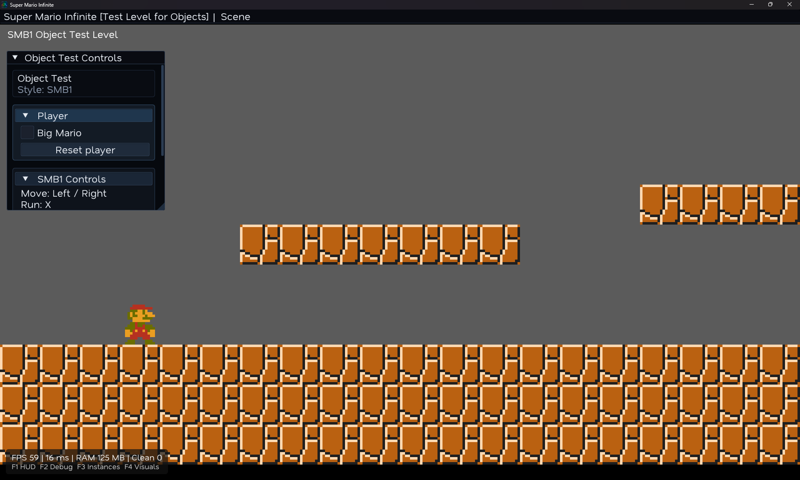
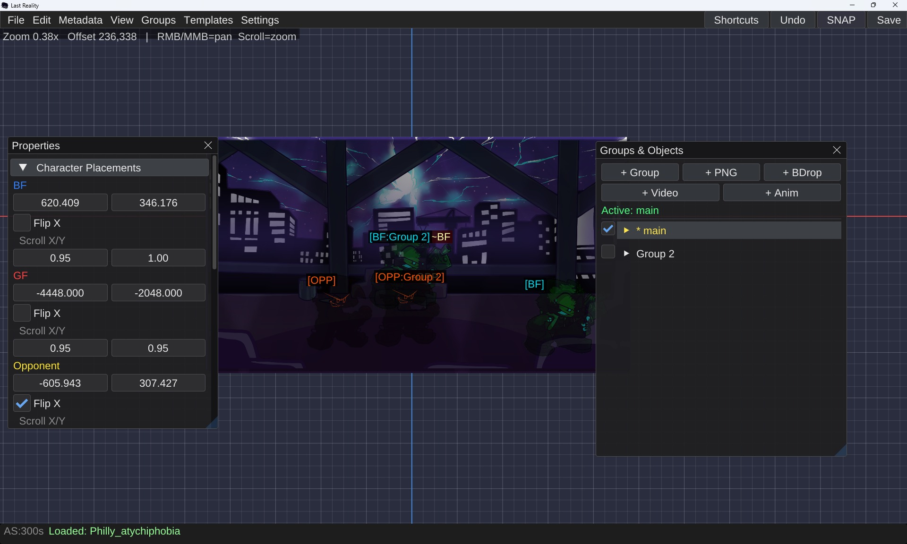

Super Mario Infinite (C++)
This is the most recent project of my own i have been working on, its a project that i made from scratch in C++ with CMake with multiple editors that supports modding and a lot of more things!
Programmer & Director
I'm Haero, a programmer that aims to code stuff oriented to games. I've built projects ranging from mods to fan games, and in a few years I plan to start shipping my own indie titles. I'm 20 years old and have solid experience working in dev teams.
programming languages
GDScript
PrimaryThe language I've worked with the most. I'm currently using it to develop one of my fangames, and I'm comfortable with both 2D and 3D development in Godot.
Haxe
PrimaryI've built personal projects with Haxe and various libraries, mostly experiments, and they've gone well. I mainly use it to create Friday Night Funkin' mods, though I'm fully open to working on other projects with it.
C#
PrimaryI mainly use C# with Unity. I once attempted to build a game engine from scratch as an experiment and made significant progress. I'm comfortable with both 2D and 3D development in Unity, much like I am with GDScript in Godot.
engines
portfolio

This is the most recent project of my own i have been working on, its a project that i made from scratch in C++ with CMake with multiple editors that supports modding and a lot of more things!
Fan game made in RPG Maker MZ where I contributed before it was cancelled where I did the intro warning and the intro handler, I did a save system and a complete boss fight.
I helped with bug fixes and shaders.
Here I did some bug fixes to some parts of the mod and the video I include here is the one I coded completely, the shaders were not mine but all the code except from the healthbar was made by me (the icons animations logic was made by me too).
A cancelled fangame of Mario Dream Team with a lot of shaders, cutscene logic and overworld logic.
Fan game made in Godot. Features a 2.5D battle system, and overworld logic, with cutscenes and stages.
Did the whole logic of the bios menu and the main menu and title menu and the cutscene handler and window events and the post-false sunset cutscene state thing the song events and stuff was not made by me but by the other coder.
A FNF mod that I contributed with stages and shaders, this one shows the week 3 stage of the mod with a shader I did for the lighting that has a script for when the train comes and leaves.
Early Unity project, I did the overworld logic and the doors logic and a loading screen that goes to another scene in async loading.

Custom game engine experiment written in C# with CMake from scratch, with a functional stage editor, a character editor and a simple playstate mode and menus of the original mod.
Early prototype of Shadows of the Kingdom, it had only some simple character movement logic.